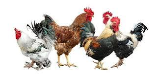
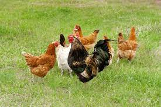

It is important to note that there aren’t very many differences between roosters vs chickens given that they are essentially the same animal. However, a rooster is a male chicken only, while a chicken refers to a bird of either gender. They are both members of the Phasianidae family, given that they are the same animal. However, there are some physical differences between roosters and chickens of other genders. Roosters are exclusively male chickens while “chicken” is a phrase that can refer to either gender. While this may seem like a strange distinction, it is a necessary one when it comes to how you refer to the genders of this particular bird.
A rooster in his prime should be kept with 10-12 hens. However if you put him in a flock of 20 or more hens he will still consider them all to be his and be possessive about them. For the exact hen to rooster ratio refer to our table here. It is not advisable to have less than four hens to a rooster unless he is penned. A rooster in his prime can ‘cover’ 1-16 hens. As he ages, he can successfully cover fewer hens, at age 3 years he is considered ‘beyond prime’. A rooster’s job is to ensure the success of his kind so mating with the hens looms large in his mind for many of his waking hours.
Chickens are selectively bred in order to amplify certain characteristics deemed desirable
for human use. Chickens are commonly raised for their meat, eggs, or companionship when kept
as pets. Some breeds grow quickly while eating relatively small amounts of food, making their
flesh more cost-effective for farmers. Other breeds produce more eggs or larger eggs. Still,
others are especially suited to confinement and take well to human relationships, making them
better suited as pets.
The type of chicken raised for meat within North American factory farms is a hybrid between
Cornish hens and Plymouth Rocks. These hybrids are selectively bred for their abilities to
produce larger pectoral muscles, or white breast meat, which is popular among consumers. With
white feathers and red wattles, these birds are the kind seen in cartoonish advertisements for
popular chicken restaurants. Hybrid White Leghorns are the layer hens commonly seen in factory
farms. These chickens can lay up to 300 eggs in their first year, which is often the bird’s
lifespan within industrial contexts (though in the wild chickens can live for a decade or more).
Foghorn Leghorn, the Looney Tunes character, is reminiscent of this breed.
Spring for predators is above all a time when they have young to raise and care for. Which means that they are more likely than ever to come looking for food. And poultry are often top of the menu. Foxes are notorious for fearless hunting at this time of year, even in urban areas. Members of the weasel family also breed now. These small mammals, like mink, stoats and pine martens may not kill chickens for food - they tend to kill for fun - but they do enjoy eggs. They also enjoy small rodents. So mice, rats, or eggs left in nest boxes will attract them and you can expect to see them trying to get close to your chickens. While they're there, they won't hesitate to kill a few hens on the way. They enjoy the chase, and the kills. It's how they get their kicks.
It is estimated that somewhere between 60 – 80% of the significant gains in meat chicken performance that have been made over the past 60 years are due to genetic improvements made in the breeds that are available and used commercially. These have all been made possible by traditional selective breeding. Farmers have been selectively breeding chickens for thousands of years. The basic method is quite simple. If you breed from the hen which lays the most eggs, the chances are that her daughters will also be good layers. This is because the number of eggs which a hen lays is partly controlled by the genes which a hen inherits from her parents. Egg production can also be increased by environment, for example by providing good feed and keeping the lights on for longer since day length affects the laying pattern. With modern scientific breeding, hens today lay over 300 eggs per year, around ten times as many as their jungle fowl ancestors. In the same way, broiler or meat chickens have been selectively bred to grow very fast using the same principle.